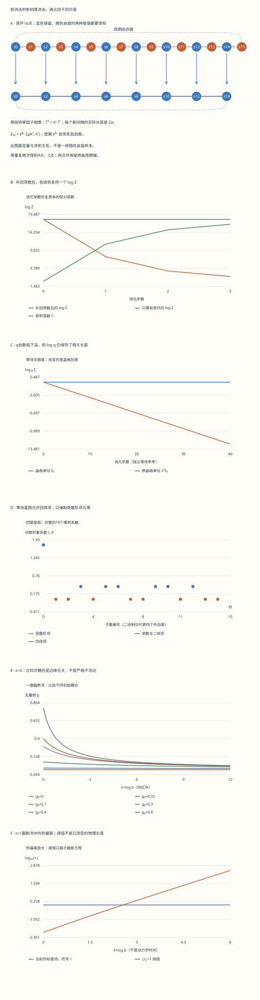

本页目录
统计进阶 III · 重整化群：消去变量之后，怎样保留物理？
前置：有限 Ising 模型的配分函数与转移矩阵、条件概率、Landau 自由能；理解一圈近似还需 Gaussian 积分与低阶微扰展开。 本课目标：亲手核对一次完整消元，找到新产生的相互作用，再把精确变换与临界点附近的截断流区分开。
1. 少看一半自旋，为什么不能只把它们擦掉？
要保留的是剩余变量的概率，而不是原图的样子
把十六个自旋围成一个环，只观察编号为偶数的八个。没有被观察的自旋仍会影响它们：一个隐藏自旋更愿意与两侧同向，因此能在可见邻居之间传递关联。消元是把隐藏变量的所有可能性加起来，不是把它们设成零，也不是从原能量里删去有关项。
若完整概率是 \(p(x,y)\)，只观察 \(x\) 就使用边缘概率 \(p_{\mathrm{keep}}(x)=\sum_y p(x,y)\)。只要这一步做得精确，任意仅依赖保留变量的量 \(O(x)\) 都满足 \(\langle O\rangle_p=\langle O\rangle_{p_{\mathrm{keep}}}\)。这就是本课第一条可检查的承诺。
本课有三个相接的实验：有限一维环的精确消元；四臂星图产生四体耦合的精确例子；临界点附近的一圈截断流。前两项可以逐状态核对，第三项的数值解只对明写出来的近似方程精确。它们合在一起，解释为什么重整化群既是一种严格组织方法，也经常需要有边界的近似计算。
2. 一次精确消元，需要同时保存三个数
使用无量纲耦合 \(K=J/T\) 与无量纲场 \(h=H_{\mathrm{phys}}/T\)。这里的 \(h\) 与上一课有能量单位的外场不同；本课指数里不再另除一次温度。取偶数 \(N\) 的周期环，\(s_i=\pm1\)，
矩阵的行、列依次对应 \(-1,+1\)。每个矩阵因子分担两个端点各一半的外场，所以绕环相乘后，每个自旋恰好得到完整的 \(h s_i\)。\(N=2\) 时仍按周期方向保留两条平行键，这与上一课的定义一致。
消去两个保留自旋中间的一个自旋，就是计算 \((T^2)_{ab}=\sum_{\sigma=\pm1}T_{a\sigma}T_{\sigma b}\)。写成 \(T^2=\begin{pmatrix}A&B\\B&D\end{pmatrix}\)，其三个独立的正数可以重新匹配为
由此得到的是 \(Z_N=e^{Nc/2}Z_{N/2}(K',h')\)。只记录 \(K',h'\) 能恢复归一化后的保留自旋概率，却不能恢复配分函数的绝对值。 常数 \(c\) 对自由能很重要；“常数不影响物理”这句话必须先说明研究的是哪一种物理量。
零场时，\(A=D=2\cosh 2K,\ B=2\)，所以 \(h'=0\)、\(K'=\tfrac12\log\cosh2K\)、\(c=\log2+K'\)。例如 \(K=1\)，\(K'\approx0.662501\)，而 \(\tanh K'=(\tanh1)^2\approx0.580026\)。这里的 \(0.580026\) 已经是平方后的数，不能再平方一次。
连续消元时，若第 \(j\) 次变换前还有 \(N_j\) 个自旋，则累积常数是 \(\mathcal C_k=\sum_{j=0}^{k-1}(N_j/2)c_j\)，并且 \(\log Z_{16}=\mathcal C_k+\log Z_{N_k}(K_k,h_k)\)。实验到 \(16\to8\to4\to2\) 为止；各级完整矩阵幂与常数都可下载核对。
3. 概率保住了，原来的磁化怎样找回来？
固定一次变换后保留的自旋 \(a_i\)。它们之间的隐藏自旋 \(\sigma_i\) 在这个条件下彼此独立，且
因此原来总磁化的条件平均是 \(\mathbb E(M_{\mathrm{old}}\mid a) =\sum_i a_i+\sum_i\tanh[h+K(a_i+a_{i+1})]\)。 先按边缘概率平均这个表达式，就能恢复原来的 \(\langle M_{\mathrm{old}}\rangle\)。这一步称为对观测量一起做变换；它说明有效理论除了变换能量，也要说明如何解释读数。
均匀周期环具有平移对称性，所以保留子格的每自旋平均磁化与完整环相同。但把八个保留自旋的总磁化直接当成原来十六个自旋的总磁化，会漏掉另一半贡献。对非均匀体系，也不能未经证明就沿用每自旋均值相同的结论。
同样，若从原场 \(h_0\) 的导数求总磁化，应使用完整链式法则： \(\partial_{h_0}\log Z_{16} =\partial_{h_0}\mathcal C_k +(\partial_{K_k}\log Z_{N_k})\,\partial_{h_0}K_k +(\partial_{h_k}\log Z_{N_k})\,\partial_{h_0}h_k\)。 最后一项里的 \(\partial_{h_k}\) 不是原来那个 \(\partial_{h_0}\)。实验用全构型条件求和与上述条件自旋公式交叉比较，不靠把两个导数混为一谈。
4. 相关长度变短了，实际长度却没有变
先只看零场无限一维链。记 \(q=\tanh K\)，两点相关为 \(\langle s_0s_r\rangle=q^r\)，相关长度以原晶格间距为单位是 \(\xi=-1/\log q\)。精确消元给出 \(q'=q^2\)，所以 \(\xi'=\xi/2\)。
这并不意味着同一个样品中的物理关联突然缩短一半：保留格点的实际间距从 \(a\) 变成 \(2a\)，因此 \((2a)\xi'=a\xi\)。连续 \(k\) 步后，\(\log q_k=2^k\log q_0\)，\(2^k\xi_k=\xi_0\)。图中将晶格单位与原始物理单位分列，避免把换刻度读成新动力学。
数值上，反复计算 \(\tanh K_k\) 很快会遇到极小数。在实验的四十步零场参考中，\(\log q_k\) 始终单独保存；即使 \(q_k\) 已小到浮点数显示为零，仍能由 \(-1/\log q_k\) 计算相关长度。显示零只是下溢，不能推断某一次有限步变换突然完全丢失了关联。
有限环的相关函数不同：\(\langle s_0s_r\rangle_N=(q^r+q^{N-r})/(1+q^N)\)，会在 \(r=N\) 回到自身。非零场还要区分相关与减去 \(\langle s\rangle^2\) 的连通相关。因此实验将四十步图明确标作零场无限链参考，即使场控件非零，也不将它冒充当前有限环的相关长度。
5. 一个中心自旋，就能产生四体相互作用
一维最近邻链消元后仍能只用 \(K',h',c\) 描述，是它的特殊结构。要看到一般情况下缺失了什么，考虑四个外自旋 \(s_1,\ldots,s_4\) 共同连接一个中心自旋 \(\sigma\)。本例没有外圈键，也没有外自旋场。消去中心后的权重为
外自旋一共有十六个构型。函数 \(\log W\) 可在十六个自旋乘积上完整展开： \(\log W(s)=\sum_{A\subseteq\{1,2,3,4\}}c_A\prod_{i\in A}s_i\)，其中 \(c_A=2^{-4}\sum_s\log W(s)\prod_{i\in A}s_i\)。 空集乘积等于 \(1\)，所以常数也属于展开。它是有限的正交基变换，不是小 \(K\) 展开。
零场的反号对称性让所有奇数阶系数为零，但不要求四阶系数为零。四体项恰好是 [ c_{1234}=\frac18\left[\log\cosh4K-4\log\cosh2K\right] =-2K^4+O(K^6). ] 例如 \(K=1\) 时，它约为 \(-0.249103\)，已经不是可以默默忽略的零。这里系数写在对数权重里；若写有效作用量 \(\mathcal H_{\mathrm{eff}}=-\log W\)，相应项的符号要反过来。
这个星图是“消元会生成新耦合”的直接反例，不能冒充整个二维方格的精确重整化方案。多个被消去的自旋若彼此相连，它们的联合求和也不能再当成独立的几个星图相乘。
6. 删除高阶项后，误差怎样定义？
若只保留 \(c_A\) 中 \(|A|\le2\) 的项，会得到 \(L_2(s)\)。应重新归一化成 \(q_2(s)=e^{L_2(s)}/Z_2\)，再与精确 \(p(s)=W(s)/Z\) 比较。使用原来的 \(Z\) 会让近似概率总和不再为一。
实验列出全部十六个 \(p(s)\) 与 \(q_2(s)\)，以及 \(D_{\mathrm{KL}}(p\Vert q_2)=\sum_s p(s)\log[p(s)/q_2(s)]\) 和最大逐态概率差。两者衡量这个有限星图上的明确误差；它们没有自动给出宏观临界指数的误差条。
注意，这里删项的规则是先在 \(\log W\) 的完整 Walsh 展开中截去高阶项。它不是对所有二体模型进行最优拟合，也没有声称最小化 KL。若学习者改用矩匹配或变分优化，得到另一种投影，就应重新定义实验和比较标准。
从这里可以理解真实计算的难点：精确粗粒化可能把有限几个参数带入一个越来越大的耦合空间；只保留其中一部分，才形成可计算的近似。对称性允许哪些项、尺度变换怎样放大这些项、截断遗漏多大，是三个不同的问题。
7. 从格点走向场：为什么四维是一个分界？
长波长下用 \(n\) 分量场 \(\phi=(\phi_1,\ldots,\phi_n)\) 描述序参量，考虑具有 \(O(n)\) 内部对称性的作用量。梯度项已归一化为 \(\tfrac12(\nabla\phi)^2\)。一次 Wilson 变换包括积分掉高动量壳、重设长度刻度、重新归一化场；少掉后两步，就不能直接比较前后参数。
在 Gaussian 固定点，用 \(x=b x'\) 保持梯度积分形式，可得 \(\phi(x)=b^{-(d-2)/2}\phi'(x')\)。于是质量平方项的线性尺度指数为 \(2\)，四次项的指数为 \(4-d\)。正指数称为相关，负指数称为无关；零指数只是边缘，尚不能决定最终流向。
更一般地，\(\int d^dx\,(\phi^2)^p\) 的 Gaussian 耦合指数为 \(y_p=d-p(d-2)\)。在 \(d=4\)，四次项边缘，六次项的指数为 \(-2\)。这不是对任意强相互作用固定点都成立的数表；相互作用会修正标度维数。
“无关”也不等于任何地方都能直接设成零。例如四维以上的有序侧，正四次项仍负责稳定自由能；把它提前删去可能破坏序参量和有限尺寸的推导。使用 \(2-\alpha=d\nu\) 这样的超标度关系，必须检查是否存在危险无关变量等障碍，而不能只代一个维数进去。
8. 一圈流方程：先固定约定，再解释系数
取 \(d=4-\epsilon\)，将四次势写成 \(\lambda(\phi^2)^2/4!\)。在截止尺度 \(\Lambda\) 上定义无量纲 \(g=\lambda\Lambda^{-\epsilon}/(8\pi^2)\)，并令 \(\ell=\log b\) 随观察尺度增大而增大。下列方程使用临界面附近的热标度坐标 \(t\)，它已经减去质量的临界偏移，并不是裸质量平方。
这两式是本实验采用的一圈截断方程。更高圈项、非线性热坐标项，以及更一般的耦合没有包含在其中。靠近固定点且 \(\epsilon\) 很小时可以按阶组织它们；离开这个范围后，数值积分得很精确也不能消除截断误差。
系数可以与已学过的图计数连接起来。高动量壳积分在四维给出 \(\int_{\mathrm{shell}}d^4q/[(2\pi)^4q^4]=d\ell/(8\pi^2)\)。\(O(n)\) 指标收缩使四点修正包含 \(n+8\)，二点修正包含 \(n+2\)；与 \(4!\) 的顶点归一化组合后，分别得到上式的 \(1/6\) 系数。\(n=1\) 时，四点系数成为 \(3/2\)，换回 \(\lambda\) 就是红外方向的 \(-3\lambda^2/(16\pi^2)\)，与上一组场论课的约定可直接对照。
许多场论教材用能标 \(\mu\) 定义 \(\mu\,dg/d\mu\)。增大长度与减小能标相对应，所以在匹配同一无量纲约定后，\(\beta_\ell=-\beta_\mu\)。正负号不同可能只是方向不同；必须先检查方向和耦合的定义。
9. 解析流：边缘方向不能只看一个零
记 \(a=(n+8)/6,\ b=(n+2)/6\)。对 \(\epsilon>0\)，定义 \(D(\ell)=1+a g_0(e^{\epsilon\ell}-1)/\epsilon\)，则 [ g(\ell)=\frac{g_0e^{\epsilon\ell}}{D(\ell)},\qquad \int_0^\ell g(u)\,du=\frac{\log D(\ell)}a,\qquad t(\ell)=t_0e^{2\ell}D(\ell)^{-b/a}. ]
\(\epsilon=0\) 时直接使用连续极限 \(D=1+a g_0\ell\)，因此 \(g(\ell)=g_0/(1+a g_0\ell)\)。正的 \(g_0\) 缓慢趋向零：虽然线性特征值是零，二次项仍使它边缘无关。衰减是 \(1/\ell\)，对应实际长度的对数修正。实验只允许 \(g_0\ge0\)，没有把可能不稳定的负四次势画成同一条安全轨迹。
\(\epsilon>0\) 时有 Gaussian 固定点 \(g=0\) 和 Wilson–Fisher 固定点 \(g_*=6\epsilon/(n+8)\)。在热坐标为零的临界面上，任意本实验范围内的正 \(g_0\) 都趋向 \(g_*\)；若恰好 \(g_0=0\)，则始终停在 Gaussian 线上。不能从一张有限精度箭头图抹去这个特殊初值。
实验保存全部 121 个流点。若 \(t_0\ne0\) 且窗口内达到 \(|t|=1\)，另用求根找到交叉尺度 \(e^{\ell_*}\)。这个阈值只是截断流中的操作性标记，不能直接当作测得的物理相关长度。有关“小参数”的提示同样是诊断，不是误差保证。
10. 临界指数：一阶级数不能冒充无限阶答案
在 Wilson–Fisher 点附近，四次耦合方向的特征值为 \(-\epsilon+O(\epsilon^2)\)，热方向为 \(y_t=2-\frac{n+2}{n+8}\epsilon+O(\epsilon^2)\)。 前者给出趋近固定点的修正指数 \(\omega=\epsilon+O(\epsilon^2)\)，后者给出 [ \nu=\frac1{y_t} =\frac12+\frac{n+2}{4(n+8)}\epsilon+O(\epsilon^2). ]
为什么实验把 \(\nu\) 的一阶式与 \(1/[2-(n+2)\epsilon/(n+8)]\) 分列？后者把一个截断分母直接求倒数，展开后会带入一些二阶、三阶项；这些项没有经过相应圈数的计算，不能当成更准确的预测。
例如 \(n=1,\epsilon=1\)，一阶级数给 \(7/12\approx0.583333\)，直接倒数给 \(3/5=0.6\)。它们的差异展示了截断处理方式的影响；两者都不是三维 Ising 的精确指数。实验允许 \(\epsilon=1\) 是为了看这个问题，不是宣布小参数展开在这里已有严格精度保证。
在通常标度与超标度条件满足、并且只保留一阶 \(\epsilon\) 的前提下，还可推出 \(\alpha=\frac{4-n}{2(n+8)}\epsilon\)、 \(\beta=\frac12-\frac{3}{2(n+8)}\epsilon\)、 \(\gamma=1+\frac{n+2}{2(n+8)}\epsilon\)、 \(\delta=3+\epsilon\)，各式均省略 \(O(\epsilon^2)\)。 本阶 \(\eta=0+O(\epsilon^2)\)，不是说它在真实相互作用固定点上严格为零。将这些级数代入指数关系时，也必须统一截断到同一阶。
11. 怎样用这节基础课读下一步研究？
先完成三个小任务：把有限环的 \(\mathcal C+\log Z_{\mathrm{effective}}\) 恢复成同一个值；从星图全部十六个权重亲手提取四体项；在 \(\epsilon=0\) 与 \(\epsilon>0\) 比较正四次耦合的流向。每个任务都有明确的输入、可观察结果和失败条件，比只记住一张“流向固定点”的图更有用。
然后回到路径积分与重整化，比较 Gaussian 精确消元与相互作用的截断；进入量子临界性时，再问时间方向怎样标度、动力学指数是什么，以及有限温度如何截断量子临界行为。经典平衡 Ising 环没有实时间演化，本页的 RG 步数也不是动力学时间。
继续研究时，无论采用数值粗粒化、函数重整化群或固定点约束方法，都可以沿用同一套问题：保留哪些自由度与观测量？使用什么投影？误差来自有限尺寸、截断还是数值求解？支持的是某个近似模型，还是已控制极限的结论？本页没有实现这些进一步方法，先把进入它们所需的计算习惯练扎实。
无脚本对照：六组完整固定记录保留精确消元与一圈截断的不同适用范围。

| 预设 | 原始logZ | 恢复logZ | 星图四体系数 | 删项KL | ν一阶式 |
|---|---|---|---|---|---|
| exact-chain | 18.0435777 | 18.0435777 | -0.249102845 | 0.0258215065 | 0.516666667 |
| positive-field | 21.1368609 | 21.1368609 | -0.234099852 | 0.0350103535 | 0.516666667 |
| weak-chain | 11.1103466 | 11.1103466 | -1.23354308e-05 | 7.60814216e-11 | 0.516666667 |
| strong-chain | 48.6938843 | 48.6938843 | -1.24007288 | 0.0153124511 | 0.516666667 |
| marginal | 18.0435777 | 18.0435777 | -0.249102845 | 0.0258215065 | 0.5 |
| epsilon-one | 18.0435777 | 18.0435777 | -0.249102845 | 0.0258215065 | 0.583333333 |
下载六组完整记录。含全部矩阵幂、边缘概率、条件观测量、星图系数、扫描与截断ODE流点。固定记录没有把一圈近似升级为精确临界指数。
12. 八个可核对的练习
1. 为什么少了常数，归一化概率仍对，配分函数却错？
零场 \(K=0\) 时所有自旋独立，\(Z_N=2^N\)。矩阵 \(T\) 每项都是 \(1\)，所以 \(T^2=2T\)，即 \(K'=0,c=\log2\)。有效环自己只有 \(Z_{N/2}=2^{N/2}\)，补回 \(e^{Nc/2}=2^{N/2}\) 才得到 \(2^N\)。常数在概率分子与分母同时出现，会约去；在 \(\log Z\) 中却直接贡献 \(N\log2/2\)。虽然控件为避免相关长度退化取 \(K\ge0.05\)，这个解析边界仍可手算。
2. 推导非零场的一步匹配，并检查小耦合的稳定表达式。
直接平方给出 \(A=e^{2K-2h}+e^{-2K}\)、\(B=2\cosh h\)、\(D=e^{2K+2h}+e^{-2K}\)。由对角元比值得 \(h'=\tfrac12\log(D/A)\)，由对角元乘积与非对角元平方之比得 \(K'\)。再用非对角元 \(B=e^{c-K'}\) 得 \(c=\log B+K'\)。
由于 \(AD-B^2=(\det T)^2=4\sinh^2 2K\)，可以改写为 \(K'=\tfrac14\log[1+(\sinh2K/\cosh h)^2]\)。 当 \(K\) 很小时用 \(\log(1+x)\) 的稳定计算避免先求两个几乎相等的大数之比再减一。它与完整矩阵匹配是同一个公式，不是额外截断。
3. 不逐个记录隐藏自旋，怎样恢复一个原始观测量？
使用全期望公式 \(\mathbb E[O]=\mathbb E_a[\mathbb E(O\mid a)]\)。单个隐藏自旋有两种权重 \(e^{\pm x}\)，所以条件均值是 \((e^x-e^{-x})/(e^x+e^{-x})=\tanh x\)，其中 \(x=h+K(a_i+a_{i+1})\)。把全部隐藏自旋的条件均值加到保留总磁化上，再按精确边缘概率求和即可。若观测量含两个隐藏自旋的乘积，还要检查它们在所给条件下是否独立，不能不加说明地把条件期望拆成乘积。
4. 为什么 \(\xi\) 除以二，却没有改变保留格点的相关？
原始相隔 \(2r\) 个晶格的保留自旋相关为 \(q^{2r}\)。消元后它们相隔 \(r\) 个新晶格，相关为 \((q')^r=(q^2)^r\)，完全相等。写成指数衰减就是 \(e^{-2r/\xi}=e^{-r/\xi'}\)，因此 \(\xi'=\xi/2\)。乘上对应的晶格间距后，物理长度相同。这项推导使用零场无限链；有限环须带上绕环项。
5. 四体项从哪里来？请按十六个构型分组计算。
零场时，全同向两种构型的四自旋乘积为 \(+1\)，权重对数是 \(\log(2\cosh4K)\)；三正一负及其反号共八种，乘积为 \(-1\)，权重对数是 \(\log(2\cosh2K)\)；二正二负六种，乘积为 \(+1\)，权重对数是 \(\log2\)。按乘积加权后除以十六，常数 \(\log2\) 约掉，得到第5节的 \(c_{1234}\)。
再用 \(\log\cosh x=x^2/2-x^4/12+O(x^6)\)，二阶项抵消，四阶项为 \([-(4K)^4/12+4(2K)^4/12]/8=-2K^4\)。对称性只消除了奇数项，没有消除这项。
6. 一圈方程的解析解真满足微分方程吗？
先取正的 \(g_0\)。对 \(D=1+a g_0(e^{\epsilon\ell}-1)/\epsilon\) 求导，得到 \(D'=a g_0e^{\epsilon\ell}=agD\)。因此 \((\log g)'=\epsilon-D'/D=\epsilon-ag\)，即 \(g'=\epsilon g-ag^2\)。对 \(\log|t|=\log|t_0|+2\ell-(b/a)\log D\) 求导得 \(t'/t=2-bg\)。\(t_0=0\) 的解单独是 \(t=0\)，不应对它取对数。若 \(g_0=0\)，则直接把 \(g=0\) 代回四次流方程即可核对，不使用 \(\log g\)。
\(\epsilon\to0\) 时，\((e^{\epsilon\ell}-1)/\epsilon\to\ell\)，于是 \(g=g_0/(1+a g_0\ell)\)。再微分得到 \(g'=-ag^2\)。这证明了所写截断方程的解，没有证明被省略的高阶物理项为零。
7. 为什么正的四次耦合能在一个方向无关，在另一个固定点相关？
线性化四次流 \(\beta(g)=\epsilon g-ag^2\)，得到 \(\beta'(g)=\epsilon-2ag\)。Gaussian 点 \(g=0\) 的特征值为 \(+\epsilon\)，而 Wilson–Fisher 点 \(g_*=\epsilon/a\) 的特征值为 \(-\epsilon\)。在同一红外方向约定下，一个小偏离在前者放大，在后者缩小。热方向在 WF 点仍有 \(y_t>0\)，所以只有调到 \(t=0\) 才能保持在临界面。线性化结论依赖所选固定点，不能只给“某耦合总是无关”的标签。
8. 核对 \(\nu\) 的展开，并解释重整化为什么通常没有逆操作。
写 \(r=(n+2)/(n+8)\)，则 \(1/(2-r\epsilon)=\tfrac12[1+(r/2)\epsilon+(r/2)^2\epsilon^2+\cdots]\)。本课只知道分母到一阶，因此可靠陈述是 \(\nu=\tfrac12+r\epsilon/4+O(\epsilon^2)\)；后面出现的几何级数系数没有独立的二圈保证。
至于“群”的名字：连续两次尺度变换确有尺度相乘的组合规律。但一般边缘概率 \(p(x)=\sum_y p(x,y)\) 不能唯一恢复联合概率，因为不同条件分布 \(p(y\mid x)\) 可给出同一个 \(p(x)\)。在一维链这种事先限制好的参数家族里，某个 \(K\mapsto K'\) 公式可能可逆；这不意味着已经恢复了任意微观条件分布，也不使一般粗粒化成为可逆群操作。
原始讲义核对入口：Tong 的重整化群讲义第3节给出 Wilson 变换及固定点的组织方式；Tong 的连续对称性讲义第4.2.2节给出一般 \(O(n)\) 的一圈系数与特征值。本页明确换用 \(\lambda/4!\) 归一化，并自行推导有限消元、星图展开、解析流与练习。没有把这些讲义中的高阶指数或更广泛的二维结论纳入本实验。